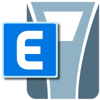
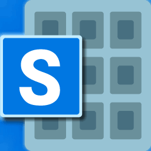
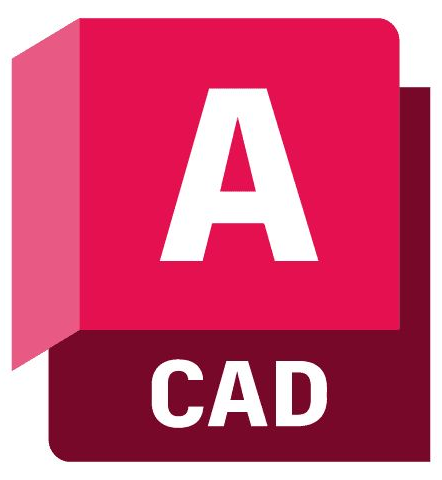
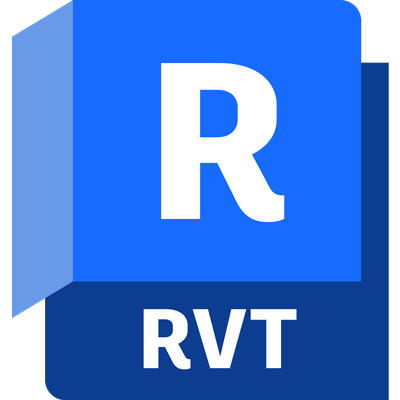
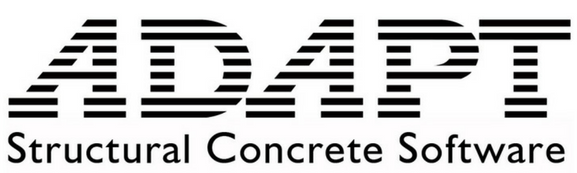

PORTAFOLIO






Una de las ventajas más significativas para los ingenieros estructurales en la actualidad es integrar la coordinación BIM y la automatización en el flujo de diseño, permitiendo optimizar el comportamiento sísmico y elevar la precisión estructural en cada edificación.
Proyectos Estructurales
Evaluación Estructural de Edificación Riosa
Análisis de capacidad resistente y evaluación del comportamiento sísmico de muros de concreto armado.

Evaluación Edificio Multifamiliar
Análisis de respuesta estructural y verificación de deriva ante exigencias de la norma E.030.
Proyectos BIM
Coordinación de Estructuras BIM
Modelado 3D y detección de interferencias en Autodesk Revit para sistemas de concreto armado.
Modelado y Planimetría Estructural 3D
Generación de documentación técnica y despiece de armado mediante metodología BIM.
Proyectos Propios
Automatización del Análisis Sísmico con Python
Desarrollo de scripts interactivos para extracción automática de datos de ETABS y verificación normativa E.030.
Diseño de Cimentaciones Superficiales
Herramienta propia de cálculo y verificación de zapatas aisladas y combinadas en SAFE.